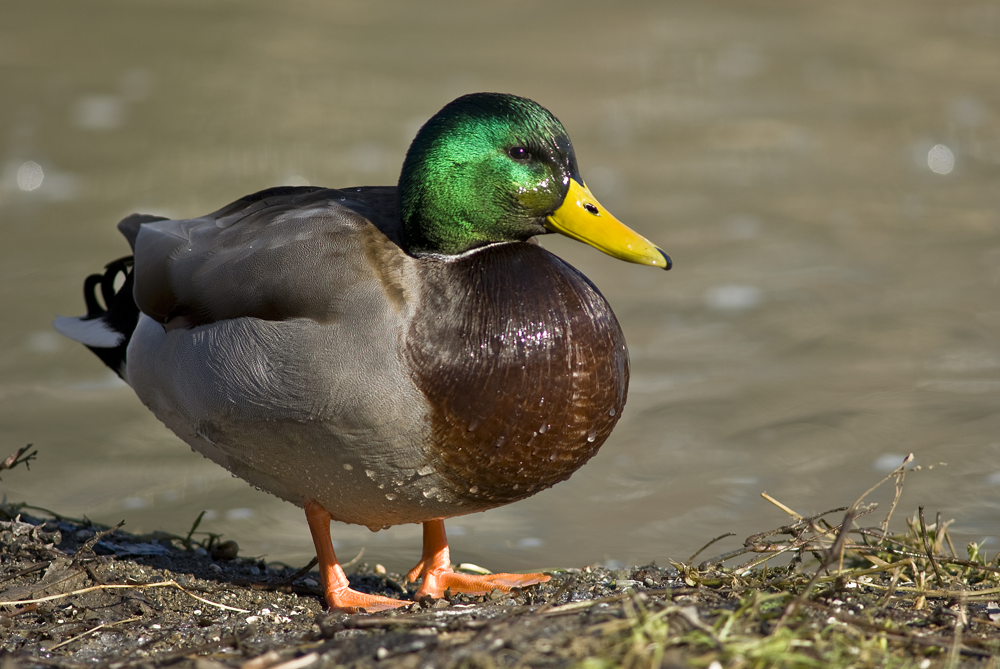

Transport OSI Layer
One project inside of the vocational school Tri-Tech was to present a part of the OSI model, I chose the transport layer. The transport layer is the 4th layer inside of the OSI model, it is responsible for reliably transferring data using different protocols. Some protocols are used to make sure a signal is transfered, other protocols while slower fit pieces of data together in the correct way like a puzzle.
Check out this basic webpage that explains some parts of the Transport Layer!The images below show the differences between an image being sent using different protocols, the left being TCP and the right UDP. Although using UDP is faster we can see TCP is far more reliable!
